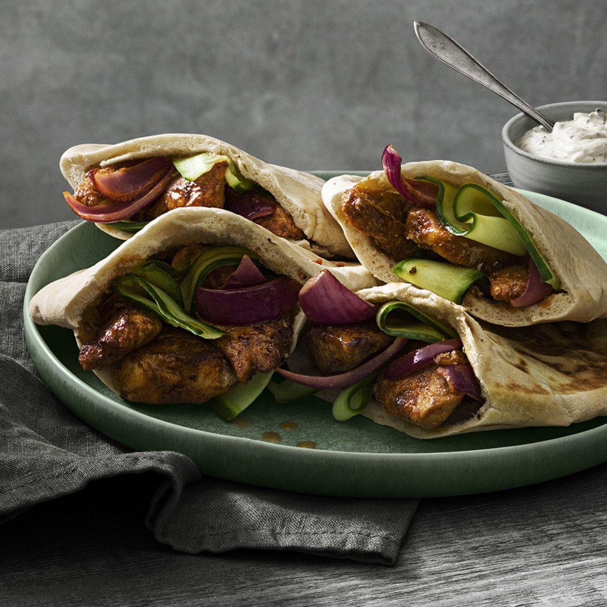

Rubbad Kycklingfilé

Ingredienser
- 600g tinat Kycklingfilé
- 2 tsk paprikapulver
- 1 tsk malen ingefära
- 1 tsk chilipulver
- 1 tsk salt
- 1 tsk mald spiskummin
Instruktioner
- Blanda Ingredienserna till rubbet. Skär kycklingfiléerna i fyra delar på längden och vänd runt i rubbet
- Stek kycklingen tillss den är genomstekt. Cirka sju minuter